Box and Whisker Plot
Simple Box and Whisker Plot | Outliers | Box Plot Calculations
This example teaches you how to create a box and whisker plot in Excel. A box and whisker plot shows the minimum value, first quartile, median, third quartile and maximum value of a data set.
Simple Box and Whisker Plot
1. For example, select the range A1:A7.
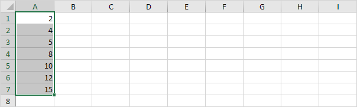
Note: you don't have to sort the data points from smallest to largest, but it will help you understand the box and whisker plot.
2. On the Insert tab, in the Charts group, click the Statistic Chart symbol.
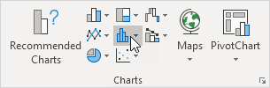
3. Click Box and Whisker.
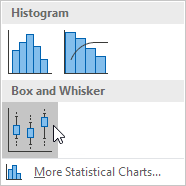
Result:
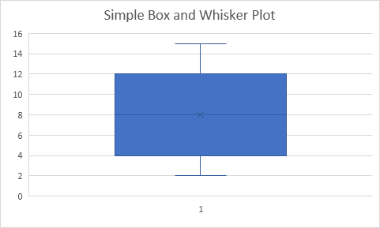
Explanation: the middle line of the box represents the median or middle number (8). The x in the box represents the mean (also 8 in this example). The median divides the data set into a bottom half {2, 4, 5} and a top half {10, 12, 15}. The bottom line of the box represents the median of the bottom half or 1st quartile (4). The top line of the box represents the median of the top half or 3rd quartile (12). The whiskers (vertical lines) extend from the ends of the box to the minimum value (2) and maximum value (15).
Outliers
1. For example, select the range A1:A11.
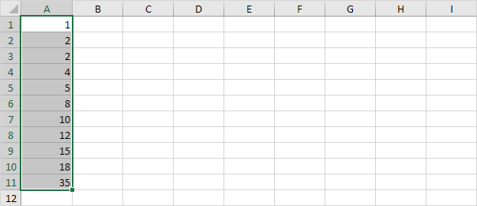
Note: the median or middle number (8) divides the data set into two halves: {1, 2, 2, 4, 5} and {10, 12, 15, 18, 35}. The 1st quartile (Q1) is the median of the first half. Q1 = 2. The 3rd quartile (Q3) is the median of the second half. Q3 = 15.
2. On the Insert tab, in the Charts group, click the Statistic Chart symbol.
3. Click Box and Whisker.
Result:
Explanation: the interquartile range (IQR) is defined as the distance between the 1st quartile and the 3rd quartile. In this example, IQR = Q3 - Q1 = 15 - 2 = 13. A data point is considered an outlier if it exceeds a distance of 1.5 times the IQR below the 1st quartile (Q1 - 1.5 * IQR = 2 - 1.5 * 13 = -17.5) or 1.5 times the IQR above the 3rd quartile (Q3 + 1.5 * IQR = 15 + 1.5 * 13 = 34.5). Therefore, in this example, 35 is considered an outlier. As a result, the top whisker extends to the largest value (18) within this range.
4. Change the last data point to 34.
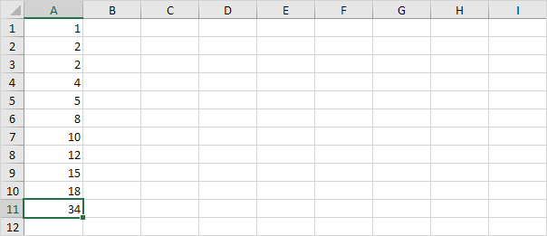
Result:
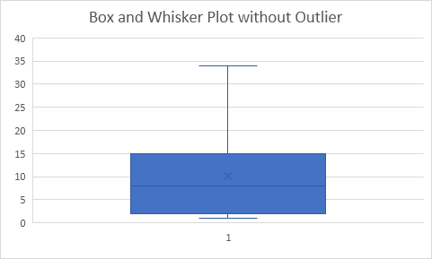
Explanation: all data points are between -17.5 and 34.5. As a result, the whiskers extend to the minimum value (2) and maximum value (34).
Box Plot Calculations
Most of the time, you can cannot easily determine the 1st quartile and 3rd quartile without performing calculations.
1. For example, select the even number of data points below.
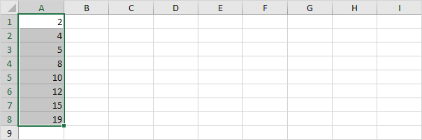
2. On the Insert tab, in the Charts group, click the Statistic Chart symbol.
3. Click Box and Whisker.
Result:
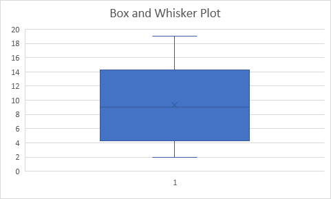
Explanation: Excel uses the QUARTILE.EXC function to calculate the 1st quartile (Q1), 2nd quartile (Q2 or median) and 3rd quartile (Q3). This function interpolates between two values to calculate a quartile. In this example, n = 8 (number of data points).
4. Q1 = 1/4*(n+1)th value = 1/4*(8+1)th value = 2 1/4th value = 4 + 1/4 * (5-4) = 4 1/4. You can verify this number by using the QUARTILE.EXC function or looking at the box and whisker plot.
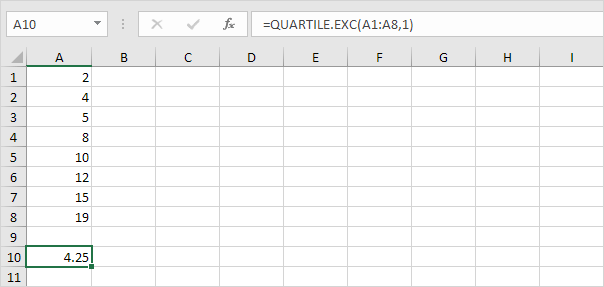
5. Q2 = 1/2*(n+1)th value = 1/2*(8+1)th value = 4 1/2th value = 8 + 1/2 * (10-8) = 9. This makes sense, the median is the average of the middle two numbers.
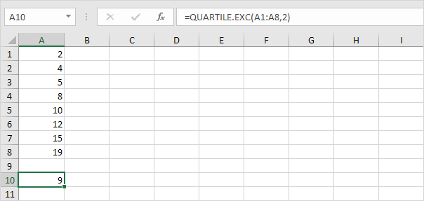
6. Q3 = 3/4*(n+1)th value = 3/4*(8+1)th value = 6 3/4th value = 12 + 3/4 * (15-12) = 14 1/4. Again, you can verify this number by using the QUARTILE.EXC function or looking at the box and whisker plot.
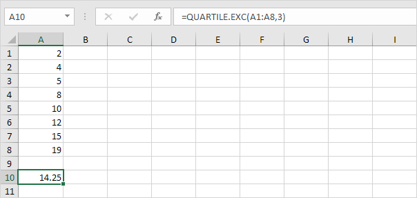